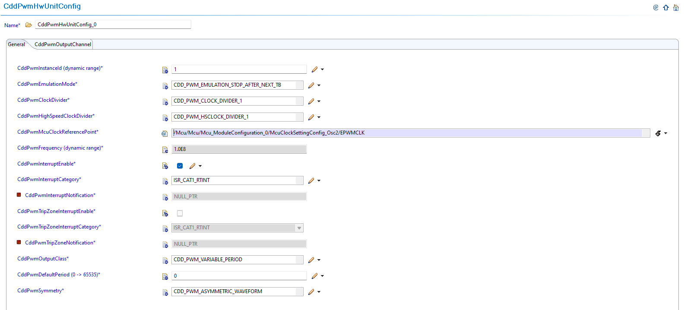
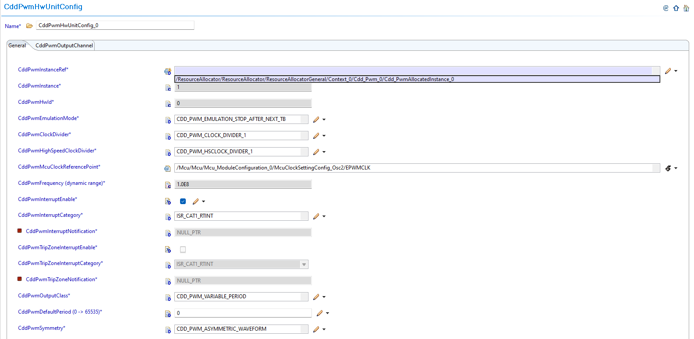
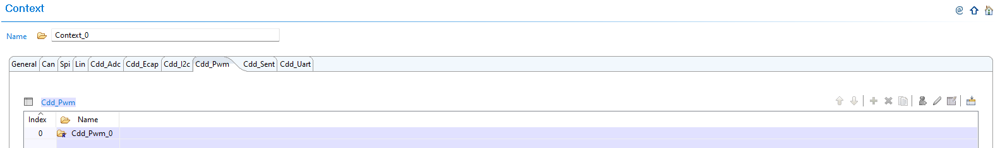
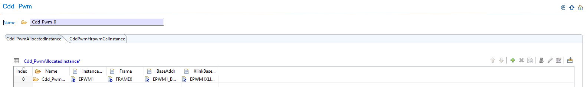
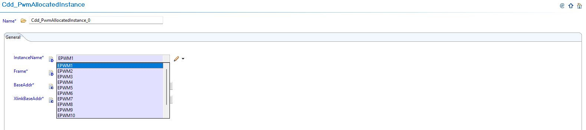
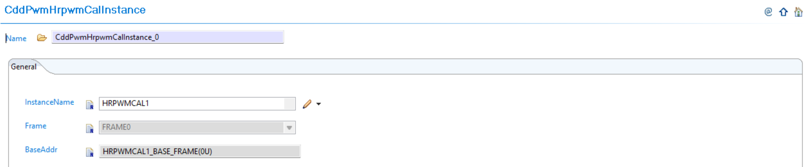
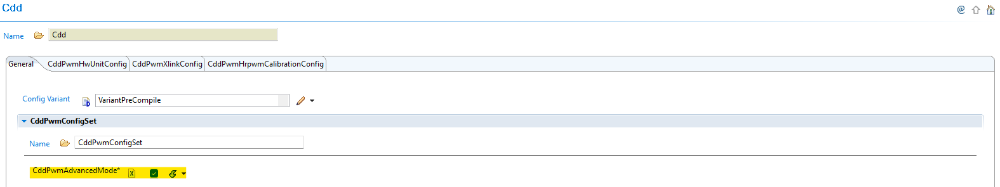

6.14. CDD PWM Module Migration
Migration Approach: Follow sequential migration for clear understanding of changes at each version. Each migration is organized by individual changes with description, old vs new comparison, and migration actions.
6.14.1. v03.00.00 (i.e release v01.04.00) from v02.00.00 (i.e release v01.03.00) Migration
6.14.1.1. Summary
Version v03.00.00 introduces Resource Allocator as a mandatory architectural foundation, fixes PWM channel symbolic name generation, and adds HRPWM calibration instance configuration support. This represents a fundamental shift from direct parameter configuration to centralized resource management:
Resource Allocator Introduction and PWM Instance Configuration Updates: Resource Allocator becomes mandatory with CDD PWM configurations updated to reference Resource Allocator instances
HRPWM Configuration Support: Optional HRPWM calibration instance configuration support added
Symbolic Name Uniqueness Requirements: Enhanced validation requires unique symbolic names across configurations
PREREQUISITE: Complete Resource Allocator Setup before proceeding.
6.14.1.2. Change 1: Resource Allocator Introduction and PWM Instance Configuration Updates
6.14.1.2.1. Description
Resource Allocator becomes a mandatory architectural foundation for the CDD PWM module, with CDD PWM configurations updated to reference Resource Allocator instances. This represents a fundamental shift from direct parameter configuration to centralized resource management, where CDD PWM instances are allocated through Resource Allocator and then referenced by PWM unit configurations.
6.14.1.2.2. Old vs New Configuration
Previous Configuration (v02.00.00): Direct parameter selection was used without Resource Allocator dependency.
{kind=link}

Fig. 6.62 v02.00.00: Direct PWM instance parameter selection
New Configuration (v03.00.00): CDD PWM configurations now reference instances allocated through Resource Allocator.
{kind=link}

Fig. 6.63 v03.00.00: Set CddPwmInstanceRef to point to the corresponding Cdd_PwmAllocatedInstance in Resource Allocator
6.14.1.2.3. Migration Actions
Setup Resource Allocator: Follow Resource Allocator Setup
Navigate to Context: Navigate to ResourceAllocatorGeneral → Context → Cdd_Pwm and add CDD PWM allocator:
{kind=link}

Fig. 6.64 Navigate to Context and add CDD PWM allocator
Add CDD PWM Instance: Add Cdd_PwmAllocatedInstance entries for each PWM instance your application requires:
{kind=link}

Fig. 6.65 Add Cdd_PwmAllocatedInstance entries for each PWM instance your application requires
Configure PWM Instance: Configure the InstanceName, Frame, and BaseAddr for each allocated instance:
{kind=link}

Fig. 6.66 Configure the InstanceName, Frame, and BaseAddr for each allocated instance
Complete Configuration: Finalize CDD PWM instance allocation
Navigate to CddPwmUnit: Navigate to Cdd → CddPwmUnit and update configurations to reference the CDD PWM instances allocated in Resource Allocator
Open PWM Unit Configuration: Access the CddPwmUnit configuration that needs to be updated
Set Instance Reference: Set CddPwmInstanceRef to point to the corresponding Cdd_PwmAllocatedInstance in Resource Allocator
Verify Automatic Derivation: Confirm that the CddPwmBaseAddress parameter is now automatically derived from the Resource Allocator reference
6.14.1.3. Change 2: HRPWM Configuration Support
6.14.1.3.1. Description
Version v03.00.00 adds optional HRPWM (High-Resolution PWM) calibration instance configuration support for advanced PWM applications. This feature allows configuration of HRPWM calibration instances through the Resource Allocator and referencing them in CDD PWM configuration.
6.14.1.3.2. Old vs New HRPWM Configuration
Previous Configuration (v02.00.00): Limited HRPWM configuration options without calibration instance support.
New Configuration (v03.00.00): Optional HRPWM calibration instance configuration through CddPwmHrpwmCalibrationConfig container in advanced mode.
6.14.1.3.3. Migration Actions
Evaluate HRPWM Requirements: Determine if your application requires HRPWM (High-Resolution PWM) features
Configure HrCal in Resource Allocator: If using HRPWM features, configure HrCal allocation in Resource Allocator first:
Navigate to ResourceAllocatorGeneral → Context → Cdd_Pwm → CddPwmHrpwmCalInstance
Add CddPwmHrpwmCalInstance allocator entries for each calibration instance required
Configure the InstanceName and calibration parameters for each allocated CddPwmHrpwmCalInstance instance
{kind=link}

Fig. 6.67 Configure HrCal allocation in Resource Allocator for HRPWM calibration support
Enable Advanced Mode: Enable advanced mode in the CDD PWM configuration to access HRPWM features. Refer to Advanced Mode for detailed information on advanced features and APIs
Configure HRPWM Calibration: Configure HRPWM calibration instances through the CddPwmHrpwmCalibrationConfig container and reference the CddPwmHrpwmCalInstance instances from Resource Allocator:
{kind=link}

Fig. 6.68 Configure HRPWM calibration instances and reference HrCal instances from Resource Allocator
Verify Calibration Settings: Ensure proper calibration settings for high-resolution PWM operation and that HrCal instances are properly referenced
6.14.1.4. Change 3: Symbolic Name Uniqueness Requirements
6.14.1.4.1. Description
Version v03.00.00 introduces enhanced validation that requires symbolic names to be unique across configurations. When migrating from v02.00.00 to v03.00.00, EB Tresos will generate validation errors if symbolic names are not unique.
6.14.1.4.2. Old vs New Validation Requirements
Uniqueness Requirements:
Parameter |
v02.00.00 |
v03.00.00 |
|---|---|---|
CddPwmOutputChannel (container name) |
No uniqueness constraint |
Must be unique across all HW units |
CddPwmXlinkInstanceRef |
No uniqueness constraint |
Must be unique across all containers |
CddPwmHrpwmCalInstanceRef |
No uniqueness constraint |
Must be unique across all containers |
6.14.1.4.3. Migration Actions
Review Container Names: Check all CddPwmOutputChannel container names for uniqueness across all HW units
Review Instance References: Ensure CddPwmXlinkInstanceRef and CddPwmHrpwmCalInstanceRef are unique across all containers
Resolve Conflicts: Update any duplicate symbolic names to ensure uniqueness and avoid validation errors during migration
Validate Configuration: Run validation in EB Tresos to confirm all symbolic names are now unique
Regenerate Configuration: Generate configuration files to get the corrected symbolic names in Cfg.h
Note
The Resource Allocator module must be configured before the CDD PWM module to ensure correct instance availability. For more details on Resource Allocator configuration, see the Resource Allocator Module User Guide.
6.14.2. v02.00.00 (i.e release v01.03.00) from v01.00.00 (i.e release v01.02.00) Migration
6.14.2.1. Summary
Version v02.00.00 introduces parameter name updates, new advanced features, and enhanced functionality while maintaining backward compatibility for basic PWM operations:
Parameter Renaming: Existing parameters renamed for clarity and consistency as initialization/default values
Advanced Mode Features: Introduction of Advanced Mode with Trip Zone protection, Xlink synchronization, and enhanced emulation support
6.14.2.2. Change 1: Parameter Renaming
6.14.2.2.1. Description
Version v02.00.00 renames existing parameters to better reflect their purpose as initialization/default values and improves naming consistency across the module. This change clarifies that these parameters represent initial configuration values written during PWM initialization.
6.14.2.2.2. Old vs New Parameter Names
Parameter Name Mapping:
v01.00.00 |
v02.00.00 |
|---|---|
|
|
|
|
|
|
|
|
Parameter Details:
CddPwmDefaultPeriod: Period value for initialization, written to TBPRD register
CddPwmDefaultDutyCycle: Duty cycle value for initialization
CddPwmDefaultDutyCycleInPercentage: Duty cycle in percentage (0-100%)
CddPwmInterruptNotification: PWM interrupt callback function
6.14.2.2.3. Migration Actions
Update Parameter Names: Update the following parameter names in your PWM configuration:
Rename
CddPwmPeriod→CddPwmDefaultPeriodRename
CddPwmDutyCycle→CddPwmDefaultDutyCycleRename
CddPwmDutyCycleInPercentage→CddPwmDefaultDutyCycleInPercentageRename
CddPwmNotification→CddPwmInterruptNotification
Verify Configuration Values: Ensure all renamed parameters retain their intended configuration values
Update Documentation: Update any project documentation that references the old parameter names
6.14.2.3. Change 2: Advanced Mode Features
6.14.2.3.1. Description
Version v02.00.00 introduces Advanced Mode with Trip Zone protection and Xlink synchronization features, along with enhanced emulation mode support. These features provide fault protection capabilities and PWM synchronization for advanced applications.
6.14.2.3.2. Old vs New Feature Configuration
New Parameters Added:
Parameter |
v01.00.00 |
v02.00.00 |
|---|---|---|
CddPwmEmulationMode |
Not available |
Controls PWM behavior during debug/emulation |
CddPwmAdvancedMode |
Not available |
Enable for Trip Zone protection and Xlink synchronization features |
CddPwmTripZoneInterruptEnable |
Not available |
Enable trip zone interrupt for fault protection |
CddPwmTripZoneInterruptCategory |
Not available |
Trip zone interrupt category (CAT1/CAT2) |
CddPwmTripZoneNotification |
Not available |
Callback function for trip zone events |
New Containers Added:
Container |
Description |
|---|---|
CddPwmXlinkConfig |
Configure PWM cross-linking for frame synchronization |
CddPwmLinkHwUnit |
Link multiple PWM hardware units together |
6.14.2.3.3. Migration Actions
Configure Emulation Mode: Set
CddPwmEmulationModeas required for your debug setupEnable Advanced Mode (Optional): If you need Trip Zone or Xlink synchronization features, enable
CddPwmAdvancedMode. Refer to Advanced Mode for detailed information on Trip Zone protection, Xlink synchronization, and other advanced featuresConfigure Trip Zone Protection (Optional): If fault protection is required, configure the Trip Zone parameters:
Enable
CddPwmTripZoneInterruptEnablefor trip zone interruptsSet
CddPwmTripZoneInterruptCategory(CAT1/CAT2) as appropriateConfigure
CddPwmTripZoneNotificationcallback function for trip zone events
Configure Xlink Synchronization (Optional): If PWM synchronization is needed, configure the Xlink containers:
Add and configure
CddPwmXlinkConfigfor cross-linking setupAdd and configure
CddPwmLinkHwUnitto link multiple PWM hardware units
Maintain Backward Compatibility: For applications not requiring Advanced Mode features, leave parameters in default configuration to ensure backward compatibility
Important
For users migrating from v1.0.0 to v2.0.0 who do not require Advanced Mode features, the default configurations ensure backward compatibility and will not affect your current working setup.